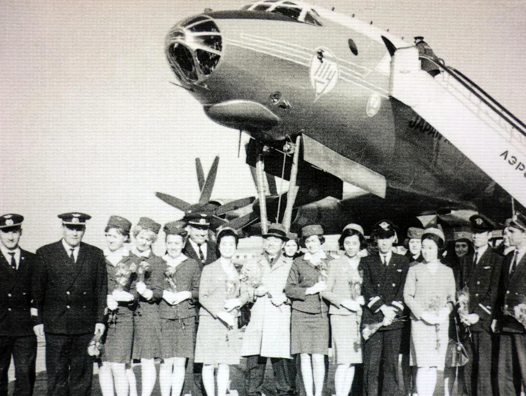
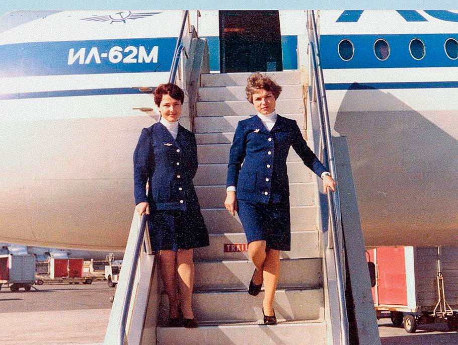
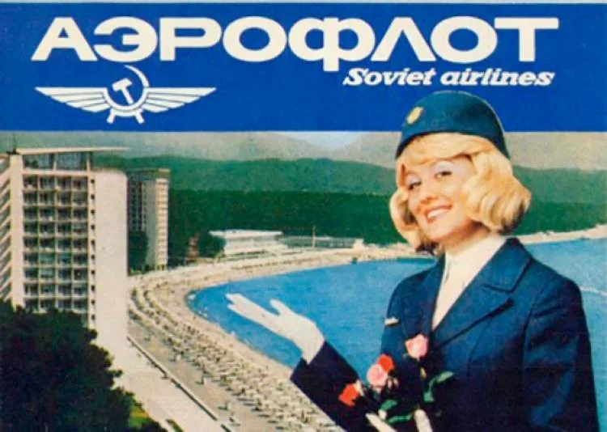
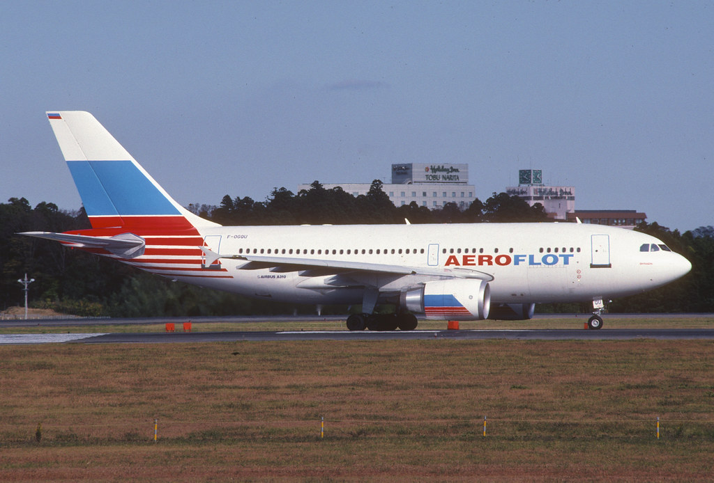
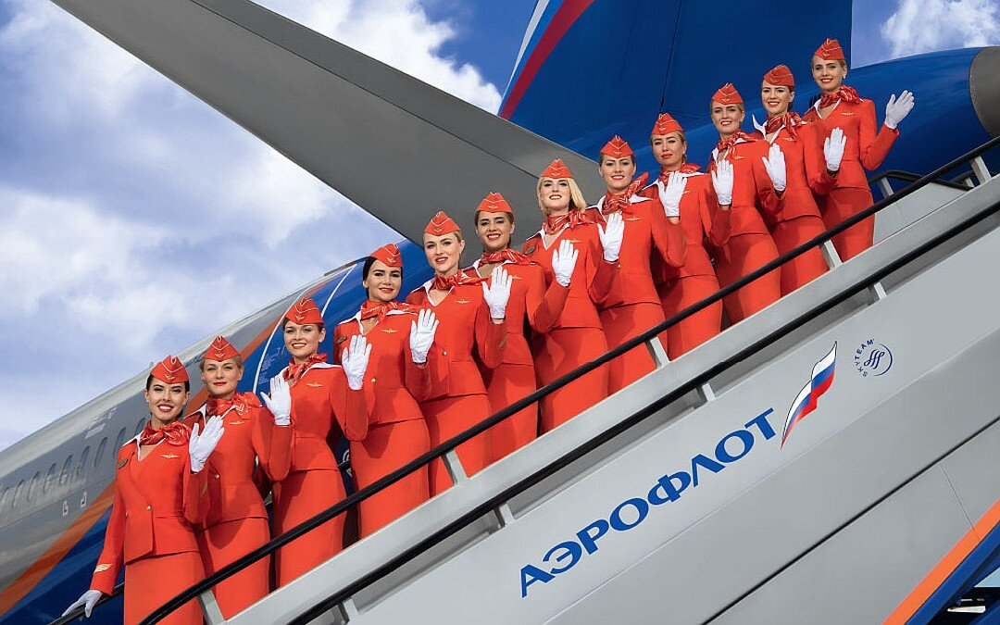

Аэрофлот — направления деятельности
«Аэрофлот» — крупнейшая авиакомпания России,
входящая в топ-20 мировых авиаперевозчиков.
Ее деятельность охватывает несколько ключевых направлений:
- пассажирские авиаперевозки
- грузовые перевозки
- сервисные направления
- IT-разработки
- обслуживание самолетов
- авиационная школа
- международное сотрудничество
Основатели
«Аэрофлот» был создан советским правительством
как единая система гражданской авиации в 1923 году.
Лица, участвовавшие в создании
- Лев Троцкий
- Феликс Дзержинский
- Алексей Рыков
- Петр Баранов
История компании
Основание и первые годы (1920–1930-е)
9 февраля 1923 года считается официальной датой создания
советской гражданской авиации. В этот день было учреждено
Общество добровольного воздушного флота "Добролёт",
которое занималось грузовыми и пассажирскими перевозками.
Первый регулярный рейс состоялся 15 июля 1923 года по маршруту
Москва — Нижний Новгород на самолёте Junkers F.13.
В 1930 году "Добролёт" был объединён с другими авиапредприятиями
в Главное управление Гражданского воздушного флота (ГУ ГВФ), а в
1932 году появилось название "Аэрофлот".

Развитие в советский период (1940–1980-е)
В годы Великой Отечественной войны самолёты "Аэрофлота"
использовались для военных перевозок, эвакуации и доставки
грузов.
В 1956 году "Аэрофлот" стал первой авиакомпанией в мире,
начавшей регулярные реактивные пассажирские перевозки
(на Ту-104).
В 1960–1980-е компания активно расширяла маршрутную сеть,
включая международные направления (Европа, Азия, Америка,
Африка).
В 1970-е "Аэрофлот" стал крупнейшей авиакомпанией мира по пассажиропотоку,
эксплуатируя такие самолёты, как Ил-62, Ту-154, Ил-86.


Кризис и реорганизация (1990-е)
После распада СССР в 1991 году "Аэрофлот" перешёл под контроль России,
а многие региональные авиаотряды стали независимыми авиакомпаниями.
В 1990-е из-за экономического кризиса парк сокращался,
но компания начала переход на западные самолёты (Boeing, Airbus).

Возрождение и современность (2000-е – настоящее время)
В 2000-е "Аэрофлот" провёл масштабную модернизацию, обновив флот и сервис.
В 2006 году вошёл в альянс SkyTeam, что расширило его международное присутствие.
В 2010-е компания стала одним из лидеров по перевозкам в Европе, запустив лоукостер "Победа".
В 2020-е, несмотря на санкции и кризисы, "Аэрофлот" продолжает работу,
переориентируясь на азиатские рынки и российские самолёты (МС-21, Сухой Superjet).
